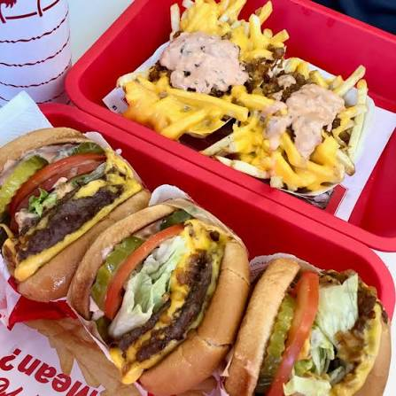
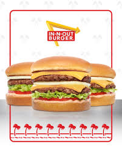

Rebeca Diaz's In-n-Out Obsession Page



- When it opened on October 22, 1948, it was California’s very first drive-thru hamburger stand.
- Founded by Harry and Esther Snyder in Baldwin Park, California
- Kids under the age of 12 can get a completely free hot cocoa at any location on rainy or snowy days.